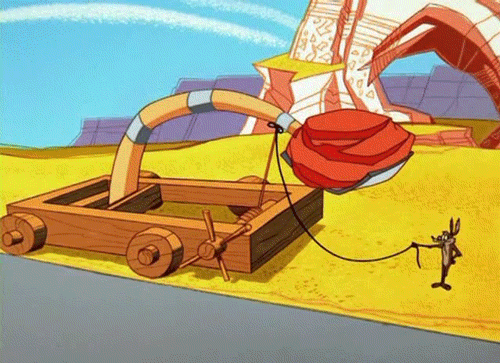
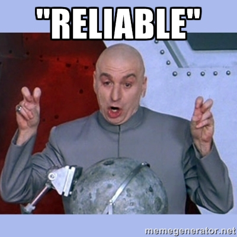
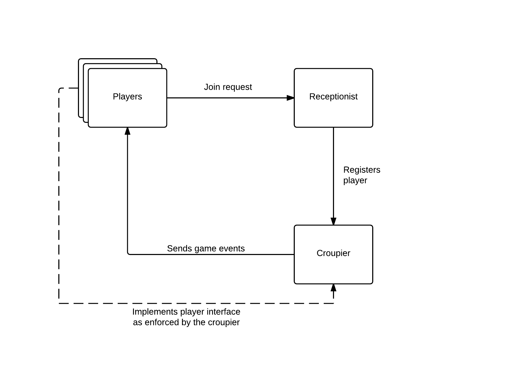
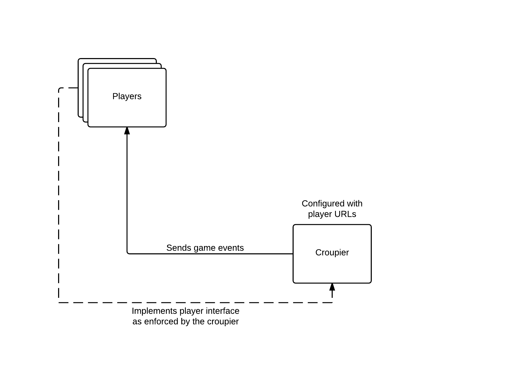
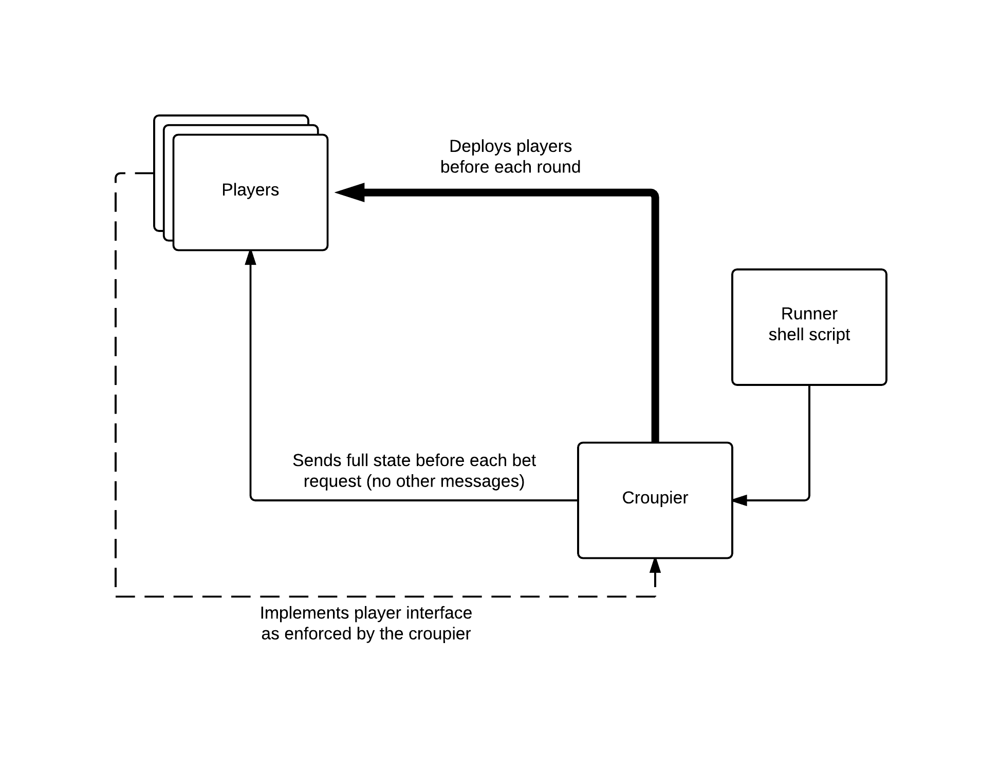

Things I learned from building Lean Poker
by Rafael Ordog (DeVill)
 @devillsroom
@devillsroom
Lean Poker is a full day workshop that focuses on fast and effective delivery
Get going!
Do not plan too much ahead
The MVP is less than you think
Don't confuse MVP with POC
The minimum viable product should be released,
and it's effects should be measured
A proof of concept is a technical experiment
and does not involve users.
The UI is the most important part
Display as much as you can
Limit necessary interaction
Time is a financial asset
Don't make early investments into...
... build pipeline
... architecture
... tools (like the DB)
Spike and stabilize
Explore the happy path in a single mammoth function
Grow abstractions when their advantages become obvious
The wrong abstraction is a lot more expensive, then no abstraction at all!
Spike and leave it alone
If your spike does the job, don't change it
It's fine to stabilize only when it's necessary
Thus legacy shall arise
And it's totally fine, as long as you do it consciously
Don't have more dept than you can pay back easily
Automated testing
TDD is NOT dead
but...
TDD is a tool, not magic
Don't fear to build up a different short feedback loop
Strong separation of business logic and integration is paramount
Have immutable state in your business objects
Cucumber is not a testing tool
For a developer an rspec test is just as readable
Limits your refactoring opportunities
Feature: New game of poker
Scenario: Two players are registered, and they get notified about
each other. After that they post their blinds and
get their hole cards.
Given the croupier is ready for a game
And "Adam" is a player
And "Bob" is a player
And the deck contains the following cards:
| 5 of Diamonds |
| 6 of Hearts |
| 7 of Spades |
| 8 of Clubs |
When I start a sit and go
Then Players get the following list of players:
| Adam |
| Bob |
And "Adam" is reported to have posted the small blind
And "Bob" is reported to have posted the big blind
And "Adam" gets the following hole cards:
| 5 of Diamonds |
| 7 of Spades |
And "Bob" gets the following hole cards:
| 6 of Hearts |
| 8 of Clubs |
Keep going


It's demanding to work alone
When you feel like giving up, take a few days off...
... even if it feels like you are losing time
The hardest part is when
you are almost ready
It's hard to get people
involved in open source
People look for early return on their investment
Open source best works with frameworks
A hack day is not enough
Innovate, but be smart
Adding new technologies
A double edged sword
The fallacy of the mature technology
An example...
You can build a message queue on MySQL
But it's way harder than using a real message queue
And by the way the thing you built on MySQL is a lot less mature
Do not fear to make a bad choice
Admitting you were wrong takes courage...
... but pays off really well
The cost of a bad choice
Even if it's something fundamental, you can change it
It took me a weekend to get rid of Thrift
Wrapping your dependencies is a good mitigation technique
The fallacy of the cool new stack
Even if it's shiny,
it still takes time to learn
Do not overwhelm yourself
Spotting the right open source project
Look at the documentation
Search for it on Stack Overflow (the more hits, the better)
Micro services
The first plan
The actual first version
Internal Ruby DSLs are cool
require_relative 'functions'
CROUPIER_ROOT = "../.."
PLAYERS_ROOT = "../../.."
tournament do
tournament_logfile "#{CROUPIER_ROOT}/log/tournament_#{run_date}"
sit_and_go_logfile "#{CROUPIER_ROOT}/log/game_#{run_timestamp}"
register_git_player "Peter Python", "#{PLAYERS_ROOT}/pp-python"
register_git_player "Rudy Ruby", "#{PLAYERS_ROOT}/pp-ruby"
end
Services are not components
Components should be organized around reasons to change
Services are organized around resources
Be aware of network overhead
It's fine to make lots of tiny function calls to a component
Services should communicate via documents
Services should be stateless
Send full state, not just events
Every data should have a single owner
Cache where necessary
Thrift is not as cool as it sounds
Terrible documentation
Hard to operate
Enforces static typing like behavior
Revised design
Setup still took long
Automate everything
Even the creation of micro services
Software and platform as a service
We need more games
Cloud computing
Parallel runs
Over 90% of the runing time
was the deployment
Stop the world deployments are infeasible
Use Green-Blue deployments instead
To be continued...
leanpoker.org  @leanpoker
@leanpoker
Rafael Ördög  @devillsroom
@devillsroom